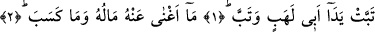
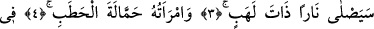
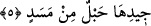

EBÛ LEHEB’İN
İKİ ELİ KURUSUN
Bismillâhirrahmânirrahîm
1. Ebû Leheb’in iki eli kurusun! Kurudu da.
2. Malı ve kazandıkları ona fayda vermedi.
3. O, alevli bir ateşte yanacak.
4. Odun taşıyıcı olarak karısı da (ateşe girecek),
5. Boynunda hurma lifinden bükülmüş bir ip olduğu hâlde.
Âyetteki “tebbet: kurusun” kelimesi “helâk” anlamındadır. Ya da “hüsrâna uğradı”
demektir. Çünkü “tebâb” hüsrân mânâsına da gelir ve zâten hüsrân da helâke götürür.
“Leheb”, dumansız alev demektir. Ateşin lehebi lisânı, “lehîbi ise sıcaklığı demektir.
“Ebû Leheb”, Abduluzza b. Abdulmuttalib’in künyesidir. Bu künye ona, Kâmûs’un
beyânına göre, güzelliği veya malı sebebiyle verilmiştir. Yâni Ebû Leheb künyesi bu
adama, yanaklarının al al yanmasından ve parlamasından dolayı verilmiştir. Yoksa onun
“Leheb” isminde bir oğlu olduğu için değil.
Bu âyette “helâk” kelimesi yerine “tebâb” kökünün tercih edilmesinin sebebi şudur:
Rivâyete göre “En yakın akrabanı uyar” (Şuara, 26/214) âyeti inince Rasûlullah
Efendimiz (s.a.) Safâ tepesine çıktı. Akrabalarını topladı ve onları uyardı: “Ey
Muttalib oğulları! Ey Fihr oğulları! Size; «Şu dağın eteğinde süvâriler var» desem
bana inanır mısınız?” diye sordu. “Evet” dediler.
“Şu dağın eteğine, baskın yapıp sizi öldürmek ve malınızı yağmalamak için hazır
bekleyen bir topluluk gelmiş olduğunu size haber versem, bu konuda beni tasdîk eder
misiniz, etmez misiniz?” buyurdu. Onlar da: “Neden tasdîk etmeyelim? Sen daha önce
önümüzde hiç yalanla ithâm edilmedin” dediler.
Rasûlullah Efendimiz (s.a.): “O hâlde ben kıyâmetin önünden size gönderilmiş bir
uyarıcıyım” buyurdu. Bunun üzerine amcası Ebû Leheb, “Tebben leke: Helâk olasın!
Bizi bunun için mi dâvet ettin?” dedi ve Allah Rasûlü’ne atmak üzere yerden bir taş
aldı, ancak Allah Teâlâ ona mânî oldu ve o taşı atamadı.[257]